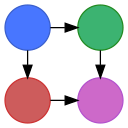

Micah Elliot Halter
I’m a computer science researcher at the Georgia Tech Research Institute in Atlanta, Georgia.
About Me

I have been interested in computer science since I was six years old, and have built up an unmatched passion for the field. I have extensive experience in software development and research from internships, projects, and competitions. I graduated from the Georgia Institute of Technology with a Bachelor of Science in Computer Science with a focus in system architecture and theory, and am working as a Researcher at the Georgia Tech Research Institute.
Contact Details
Micah Elliot Halter
Atlanta, GA
+1 704 490 9840
Work Experience
Georgia Tech Research Institute
Research Scientist • Jan 2016 - Present
- Lead contributor to research projects sponsored by large entities DARPA, NIH, and ONR
- Contributed and participated in white paper and proposal writing to bring in more funding for new and on-going projects
- Delivered applied research projects to sponsors such as source code, web applications, and technical reports
- Used NetFlow data and machine learning in Python and scikit-learn to detect compromised machines on a network based off known blacklists and whitelists of IP addresses
- Predicting crimes in Portland, OR using temporal and geographic features derived from crime statistics and GIS data
The Boeing Company
Software Development Intern • May 2016 - Aug 2017
- Developed a security auditing tool suite for Red Hat Enterprise Linux 7 to maintain hardened security on classified servers
- Developed a web application in C#, HTML, and JavaScript to view and analyze network traffic
- Developed several system administration scripts as needed by team members to complete tasks such as emailing system logs and automatic server backups
- Organized and led a software development team to create a minimum viable product of a Kanban board web application
- Pitched the Kanban board prototype to management to form a team to continue development of the application after I left
- Documented and executed an upgrade plan for the company’s identity management servers
- Developed an Outlook-integrated conference room mapping tool in C#
Projects
SemanticModels.jl

- Research funded by the Defense Advanced Research Projects Agency (DARPA)
- A category theory approach to defining metamodeling tasks for representing and composing scientific models
- A system for extracting semantic information from scientific code and reconciling it with conceptual descriptions to build a knowledge graph
Corsair Database
- Research funded by the Office of Naval Research (ONR)
- Developed a web application for viewing and analyzing sonar SAS data using Go, Python, and PostgresDB deployed with Docker and Drone.io
- Engineered a database for managing scientific experiments to utilize the speed and efficiency of using a rigid relational database, while being flexible enough to handle the changing data requirements of scientific experimentation
Research
Funding
| Dates | Role | Sponsor | Title | Agreement | Amount |
|---|---|---|---|---|---|
| 2018 - 2020 | Task Lead | DARPA | Artifical Intelligence Exploration - Automating Scientific Knowledge Extraction | Agreement No. HR00111990008 | ≈$1M |
| 2019 - 2021 | Performer | Office of Naval Research | MCM Situational Awarness | Contract No. N00014-16-C-3041 as ammended by P00009 | ≈$375K |
| 2016 - 2019 | Performer | Office of Naval Research | Performance Estimation of Underwater MCM Operations | Contract No. N00014-16-C-3041 | ≈$990K |
| 2015 - 2019 | Performer | Office of Naval Research | Automation for UxV-based Mine Countermeasures | Contract No. N00014-15-C-5172 | $540K |
Peer Reviewed Conference Publications
Under Review Journal Publications
- Accelerating Automatic Target Recognition Performance Estimation with a Relational Database for Synthetic Aperture Sonar, James Fairbanks*, Micah Halter*, Trevor Goodyear, Matthew Jackson, Brian O’Donnell, John Wilcher, Navy Journal of Underwater Research, 2018
Posters
- Scientific Knowledge Extraction, Augmentation & Analysis, Micah Halter, James Fairbanks, Eric Davis, Clayton Morrison, Ryan Wright, DARPA Demo Day, Sep 2019
Education
Georgia Institute of Technology
Bachelor of Science in Computer Science • Aug 2015 - May 2019
- Concentration in system architecture and theory
- Dean’s List Fall 2015, Spring 2016, Fall 2016, Fall 2018, Spring 2019
Skills
- Full Stack Development
- System Administration
- Database Design and Management
- High Performance Computing
- Machine Learning
- Functional Programming
- Category Theory
- Languages
- C/C++
- Python
- Go
- Julia
- Java
- Scala
- Perl
- Bash
- SQL
- MySQL
- PostgreSQL
- LaTeX
- HTML
- CSS
- JavaScript